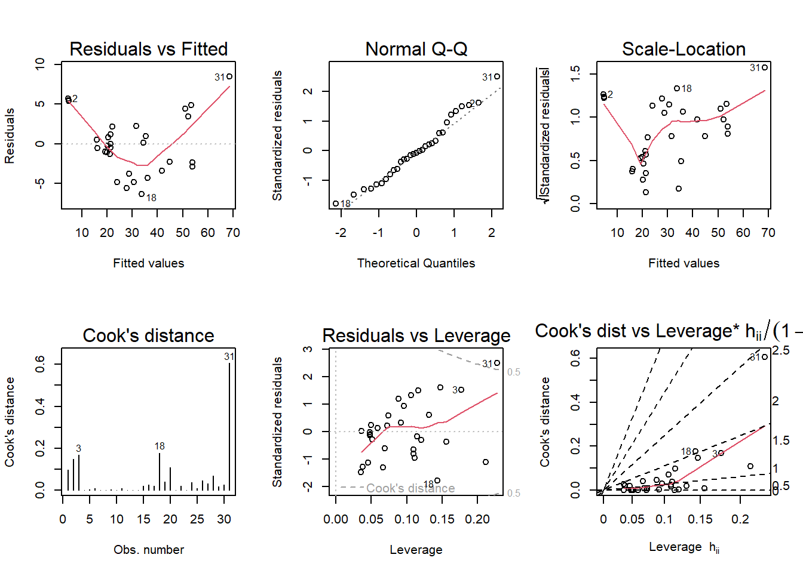

Loading required package: car
Loading required package: carData
Attaching package: 'car'
The following object is masked from 'package:dplyr':
recode
The following object is masked from 'package:purrr':
some
Loading required package: effects
lattice theme set by effectsTheme()
See ?effectsTheme for details.
Code
data("florida")
For the house.selling.price.2 data the tables below show a correlation matrix and a model fit using four predictors of selling price.
In this data, the variables are meant as:
P: selling price
Be: number of bedrooms
Ba: number of bathrooms
New: whether new (1 = yes, 0 = no)
Here is my impression of the correlation matrix:
Code
cor(house.selling.price.2)
P S Be Ba New
P 1.0000000 0.8988136 0.5902675 0.7136960 0.3565540
S 0.8988136 1.0000000 0.6691137 0.6624828 0.1762879
Be 0.5902675 0.6691137 1.0000000 0.3337966 0.2672091
Ba 0.7136960 0.6624828 0.3337966 1.0000000 0.1820651
New 0.3565540 0.1762879 0.2672091 0.1820651 1.0000000
And regression output:
Code
fit <-lm(P ~ ., data=house.selling.price.2)summary(fit)
Call:
lm(formula = P ~ ., data = house.selling.price.2)
Residuals:
Min 1Q Median 3Q Max
-36.212 -9.546 1.277 9.406 71.953
Coefficients:
Estimate Std. Error t value Pr(>|t|)
(Intercept) -41.795 12.104 -3.453 0.000855 ***
S 64.761 5.630 11.504 < 2e-16 ***
Be -2.766 3.960 -0.698 0.486763
Ba 19.203 5.650 3.399 0.001019 **
New 18.984 3.873 4.902 4.3e-06 ***
---
Signif. codes: 0 '***' 0.001 '**' 0.01 '*' 0.05 '.' 0.1 ' ' 1
Residual standard error: 16.36 on 88 degrees of freedom
Multiple R-squared: 0.8689, Adjusted R-squared: 0.8629
F-statistic: 145.8 on 4 and 88 DF, p-value: < 2.2e-16
Automated variable selection
For backward elimination, which variable would be deleted first? Why?
If I was doing backward elimination, I would pick a significance level (let’s say alpha = .05) and, at each stage, delete the variable with the largest p-value. I would stop when all variables are significant.
In this example, I would delete the Be (bedroom) variable.
Code
summary(lm(P ~ . - Be, data=house.selling.price.2))
Call:
lm(formula = P ~ . - Be, data = house.selling.price.2)
Residuals:
Min 1Q Median 3Q Max
-34.804 -9.496 0.917 7.931 73.338
Coefficients:
Estimate Std. Error t value Pr(>|t|)
(Intercept) -47.992 8.209 -5.847 8.15e-08 ***
S 62.263 4.335 14.363 < 2e-16 ***
Ba 20.072 5.495 3.653 0.000438 ***
New 18.371 3.761 4.885 4.54e-06 ***
---
Signif. codes: 0 '***' 0.001 '**' 0.01 '*' 0.05 '.' 0.1 ' ' 1
Residual standard error: 16.31 on 89 degrees of freedom
Multiple R-squared: 0.8681, Adjusted R-squared: 0.8637
F-statistic: 195.3 on 3 and 89 DF, p-value: < 2.2e-16
For forward selection, which variable would be added first? Why?
Like backward elimination, I would also predetermine a significance level (say, 5%). But here I would begin with no explanatory variable.
The Size variable would be added first in forward selection.
Code
intercept_only <-lm(P ~1, data=house.selling.price.2)step(intercept_only, direction ="forward", scope=~ S + Be + Ba + New)
Start: AIC=705.63
P ~ 1
Df Sum of Sq RSS AIC
+ S 1 145097 34508 554.22
+ Ba 1 91484 88121 641.41
+ Be 1 62578 117028 667.79
+ New 1 22833 156772 694.99
<none> 179606 705.63
Step: AIC=554.22
P ~ S
Df Sum of Sq RSS AIC
+ New 1 7274.7 27234 534.20
+ Ba 1 4475.6 30033 543.30
<none> 34508 554.22
+ Be 1 40.4 34468 556.11
Step: AIC=534.2
P ~ S + New
Df Sum of Sq RSS AIC
+ Ba 1 3550.1 23684 523.21
+ Be 1 588.8 26645 534.17
<none> 27234 534.20
Step: AIC=523.21
P ~ S + New + Ba
Df Sum of Sq RSS AIC
<none> 23684 523.21
+ Be 1 130.55 23553 524.70
Call:
lm(formula = P ~ S + New + Ba, data = house.selling.price.2)
Coefficients:
(Intercept) S New Ba
-47.99 62.26 18.37 20.07
Why do you think that BEDS has such a large P-value in the multiple regression model, even though it has a substantial correlation with PRICE?
As pointed out, Be does have a substantial correlation with P at .59. However, the large P-values in multiple regression indicate that while holding other variables fixed, it does not ‘explain’ the response variable of P, price.
Using software with these four predictors, find the model that would be selected using each criterion:
I’m not sure if I exactly get the question, but I will arbitrarily compare some models that I have made from combinations of the predictors.
Code
mod1 <-lm(P ~ S, data=house.selling.price.2)mod2 <-lm(P ~ S + New, data=house.selling.price.2)mod3 <-lm(P ~ S + New + Ba, data=house.selling.price.2)mod4 <-lm(P ~ .,data=house.selling.price.2)#A few with interaction variablesmod5 <-lm(P ~ S + New + S*New, data=house.selling.price.2)mod6 <-lm(P ~ S + New + Ba + S*New, data=house.selling.price.2)mod7 <-lm(P ~ . + S * New, data=house.selling.price.2)
###R2
Code
summary(mod1)$r.squared
[1] 0.807866
Code
summary(mod2)$r.squared
[1] 0.8483699
Code
summary(mod3)$r.squared
[1] 0.8681361
Code
summary(mod4)$r.squared
[1] 0.868863
Code
summary(mod5)$r.squared
[1] 0.8675196
Code
summary(mod6)$r.squared
[1] 0.8891938
Code
summary(mod7)$r.squared
[1] 0.8906193
Using ‘highest R-squared’ as our criteria, P ~ . + S * New is the winner. That one includes all the predictor variables in the equation, with size and newness as interaction variables.
###Adjusted R2
Code
summary(mod1)$adj.r.squared
[1] 0.8057546
Code
summary(mod2)$adj.r.squared
[1] 0.8450003
Code
summary(mod3)$adj.r.squared
[1] 0.8636912
Code
summary(mod4)$adj.r.squared
[1] 0.8629022
Code
summary(mod5)$adj.r.squared
[1] 0.8630539
Code
summary(mod6)$adj.r.squared
[1] 0.8841571
Code
summary(mod7)$adj.r.squared
[1] 0.8843331
Adjusted R-squared penalizes for adding more explanatory variables to the regression. However, it is still a virtual tie between P ~ S + New + Ba + S*New and P ~ . + S * New. Still, the latter wins.
###PRESS
This elegant function is found on Github and requires no additional libraries.
Code
PRESS <-function(linear.model) {#' calculate the predictive residuals pr <-residuals(linear.model)/(1-lm.influence(linear.model)$hat)#' calculate the PRESS PRESS <-sum(pr^2)return(PRESS)}
According to a comparison of the PRESS statistics, the best model is P ~ S + New + Ba + S*New with a PRESS of 27501.78
Code
PRESS(mod1)
[1] 38203.29
Code
PRESS(mod2)
[1] 31066
Code
PRESS(mod3)
[1] 27860.05
Code
PRESS(mod4)
[1] 28390.22
Code
PRESS(mod5)
[1] 31899.8
Code
PRESS(mod6)
[1] 27501.78
Code
PRESS(mod7)
[1] 27665.14
###AIC
According to AIC, the best (lowest) score is 774.9558, associated with the model P ~ S + New + Ba + S*New
Code
AIC(mod1)
[1] 820.1439
Code
AIC(mod2)
[1] 800.1262
Code
AIC(mod3)
[1] 789.1366
Code
AIC(mod4)
[1] 790.6225
Code
AIC(mod5)
[1] 789.5704
Code
AIC(mod6)
[1] 774.9558
Code
AIC(mod7)
[1] 775.7515
###BIC
According to BIC, the best model is the same - P ~ S + New + Ba + S*New, with a statistic of 790.1514.
Code
BIC(mod1)
[1] 827.7417
Code
BIC(mod2)
[1] 810.2566
Code
BIC(mod3)
[1] 801.7996
Code
BIC(mod4)
[1] 805.8181
Code
BIC(mod5)
[1] 802.2334
Code
BIC(mod6)
[1] 790.1514
Code
BIC(mod7)
[1] 793.4797
Explain which model you prefer and why.
I prefer the model favored by AIC and BIC, P ~ S + New + Ba + S*New. Intuitively, it makes sense that bedrooms are not a significant driver of a house’s price, although bathrooms are. And the size of a house is more consequential on the outcome of price when the building is newer.
From the documentation: “This data set provides measurements of the diameter, height and volume of timber in 31 felled black cherry trees. Note that the diameter (in inches) is erroneously labeled Girth in the data. It is measured at 4 ft 6 in above the ground.”
Tree volume estimation is a big deal, especially in the lumber industry. Use the trees data to build a basic model of tree volume prediction. In particular,
fit a multiple regression model with the Volume as the outcome and Girth and Height as the explanatory variables
Code
mod8 <-lm(Volume ~ Girth + Height, data = trees)
Run regression diagnostic plots on the model. Based on the plots, do you think any of the regression assumptions is violated?
These plots show some significant issues with the regression Volume ~ Girth + Height.
The ‘Residuals vs Fitted’ graph is U-shaped, indicating an issue with linearity.
The Normal Q-Q graph actually looks pretty good except for a wild outlier - this shows an issue with normality.
The Scale-Location graph should also be flat, but isn’t. This indicates an issue with homoscedasticity.
The Cook’s distance graph shows a clear outlier in one of the observations. A ‘high leverage’ observation (above the benchmark of 1 or n/4) may effect the regression if it were taken out.
The Residuals vs Leverage plot and Cook’s dist vs Leverage plot also show the influence of this outlier.
Code
par(mfrow =c(2,3)); plot(mod8, which =1:6)

Question 3
In the 2000 election for U.S. president, the counting of votes in Florida was controversial. In Palm Beach County in south Florida, for example, voters used a so-called butterfly ballot. Some believe that the layout of the ballot caused some voters to cast votes for Buchanan when their intended choice was Gore.
Code
florida
Gore Bush Buchanan
ALACHUA 47300 34062 262
BAKER 2392 5610 73
BAY 18850 38637 248
BRADFORD 3072 5413 65
BREVARD 97318 115185 570
BROWARD 386518 177279 789
CALHOUN 2155 2873 90
CHARLOTTE 29641 35419 182
CITRUS 25501 29744 270
CLAY 14630 41745 186
COLLIER 29905 60426 122
COLUMBIA 7047 10964 89
DADE 328702 289456 561
DE SOTO 3322 4256 36
DIXIE 1825 2698 29
DUVAL 107680 152082 650
ESCAMBIA 40958 73029 504
FLAGLER 13891 12608 83
FRANKLIN 2042 2448 33
GADSDEN 9565 4750 39
GILCHRIST 1910 3300 29
GLADES 1420 1840 9
GULF 2389 3546 71
HAMILTON 1718 2153 24
HARDEE 2341 3764 30
HENDRY 3239 4743 22
HERNANDO 32644 30646 242
HIGHLANDS 14152 20196 99
HILLSBOROUGH 166581 176967 836
HOLMES 2154 4985 76
INDIAN RIVER 19769 28627 105
JACKSON 6868 9138 102
JEFFERSON 3038 2481 29
LAFAYETTE 788 1669 10
LAKE 36555 49963 289
LEE 73560 106141 305
LEON 61425 39053 282
LEVY 5403 6860 67
LIBERTY 1011 1316 39
MADISON 3011 3038 29
MANATEE 49169 57948 272
MARION 44648 55135 563
MARTIN 26619 33864 108
MONROE 16483 16059 47
NASSAU 6952 16404 90
OKALOOSA 16924 52043 267
OKEECHOBEE 4588 5058 43
ORANGE 140115 134476 446
OSCEOLA 28177 26216 145
PALM BEACH 268945 152846 3407
PASCO 69550 68581 570
PINELLAS 199660 184312 1010
POLK 74977 90101 538
PUTNAM 12091 13439 147
ST. JOHNS 19482 39497 229
ST. LUCIE 41559 34705 124
SANTA ROSA 12795 36248 311
SARASOTA 72854 83100 305
SEMINOLE 58888 75293 194
SUMTER 9634 12126 114
SUWANNEE 4084 8014 108
TAYLOR 2647 4051 27
UNION 1399 2326 26
VOLUSIA 97063 82214 396
WAKULLA 3835 4511 46
WALTON 5637 12176 120
WASHINGTON 2796 4983 88
Code
mod9 <-lm(Buchanan ~ Bush, data = florida)summary(mod9)
Call:
lm(formula = Buchanan ~ Bush, data = florida)
Residuals:
Min 1Q Median 3Q Max
-907.50 -46.10 -29.19 12.26 2610.19
Coefficients:
Estimate Std. Error t value Pr(>|t|)
(Intercept) 4.529e+01 5.448e+01 0.831 0.409
Bush 4.917e-03 7.644e-04 6.432 1.73e-08 ***
---
Signif. codes: 0 '***' 0.001 '**' 0.01 '*' 0.05 '.' 0.1 ' ' 1
Residual standard error: 353.9 on 65 degrees of freedom
Multiple R-squared: 0.3889, Adjusted R-squared: 0.3795
F-statistic: 41.37 on 1 and 65 DF, p-value: 1.727e-08
Code
par(mfrow =c(2,3)); plot(mod9, which =1:6)
The normal Q-Q shows a strong outlier: Palm Beach county. It is very high in the Cook’s distance plot (over 1) and outside of the second dotted gray line in the Residuals vs Leverage plot.
Code
mod10 <-lm(log(Buchanan) ~log(Bush), data = florida)summary(mod10)
Call:
lm(formula = log(Buchanan) ~ log(Bush), data = florida)
Residuals:
Min 1Q Median 3Q Max
-0.96075 -0.25949 0.01282 0.23826 1.66564
Coefficients:
Estimate Std. Error t value Pr(>|t|)
(Intercept) -2.57712 0.38919 -6.622 8.04e-09 ***
log(Bush) 0.75772 0.03936 19.251 < 2e-16 ***
---
Signif. codes: 0 '***' 0.001 '**' 0.01 '*' 0.05 '.' 0.1 ' ' 1
Residual standard error: 0.4673 on 65 degrees of freedom
Multiple R-squared: 0.8508, Adjusted R-squared: 0.8485
F-statistic: 370.6 on 1 and 65 DF, p-value: < 2.2e-16
Logging both variables increased the coefficient, lowered the p-value of log(Bush), and increased the multiple R-squared by almost half. The findings of the first model are better-supported.
Source Code
---title: "Homework 5"author: "Steve O'Neill"description: "Homework 5"date: "11/27/2022"df-paged: trueformat: html: toc: true code-fold: true code-copy: true code-tools: truecategories: - hw5---```{r}library(smss)library(tidyverse)data(house.selling.price.2)library(alr4)data("florida")```*For the house.selling.price.2 data the tables below show a correlation matrix and a model fit using four predictors of selling price.*In this data, the variables are meant as:`P`: selling price`Be`: number of bedrooms`Ba`: number of bathrooms`New`: whether new (1 = yes, 0 = no)Here is my impression of the correlation matrix:```{r}cor(house.selling.price.2)```And regression output:```{r}fit <-lm(P ~ ., data=house.selling.price.2)summary(fit)```## Automated variable selection*For backward elimination, which variable would be deleted first? Why?*If I was doing backward elimination, I would pick a significance level (let's say alpha = .05) and, at each stage, delete the variable with the largest p-value. I would stop when all variables are significant.In this example, I would delete the `Be` (bedroom) variable.```{r}summary(lm(P ~ . - Be, data=house.selling.price.2))```*For forward selection, which variable would be added first? Why?*Like backward elimination, I would also predetermine a significance level (say, 5%). But here I would begin with no explanatory variable.The `Size` variable would be added first in forward selection.```{r}intercept_only <-lm(P ~1, data=house.selling.price.2)step(intercept_only, direction ="forward", scope=~ S + Be + Ba + New)```*Why do you think that BEDS has such a large P-value in the multiple regression model, even though it has a substantial correlation with PRICE?*As pointed out, `Be` does have a substantial correlation with `P` at .59. However, the large P-values in multiple regression indicate that while holding other variables fixed, it does not 'explain' the response variable of `P`, price.*Using software with these four predictors, find the model that would be selected using each criterion:*I'm not sure if I exactly get the question, but I will arbitrarily compare some models that I have made from combinations of the predictors.```{r}mod1 <-lm(P ~ S, data=house.selling.price.2)mod2 <-lm(P ~ S + New, data=house.selling.price.2)mod3 <-lm(P ~ S + New + Ba, data=house.selling.price.2)mod4 <-lm(P ~ .,data=house.selling.price.2)#A few with interaction variablesmod5 <-lm(P ~ S + New + S*New, data=house.selling.price.2)mod6 <-lm(P ~ S + New + Ba + S*New, data=house.selling.price.2)mod7 <-lm(P ~ . + S * New, data=house.selling.price.2)```###R2```{r}summary(mod1)$r.squaredsummary(mod2)$r.squaredsummary(mod3)$r.squaredsummary(mod4)$r.squaredsummary(mod5)$r.squaredsummary(mod6)$r.squaredsummary(mod7)$r.squared```Using 'highest R-squared' as our criteria, `P ~ . + S * New` is the winner. That one includes all the predictor variables in the equation, with size and newness as interaction variables.###Adjusted R2```{r}summary(mod1)$adj.r.squaredsummary(mod2)$adj.r.squaredsummary(mod3)$adj.r.squaredsummary(mod4)$adj.r.squaredsummary(mod5)$adj.r.squaredsummary(mod6)$adj.r.squaredsummary(mod7)$adj.r.squared```Adjusted R-squared penalizes for adding more explanatory variables to the regression. However, it is still a virtual tie between `P ~ S + New + Ba + S*New` and `P ~ . + S * New`. Still, the latter wins. ###PRESSThis elegant function is found on [Github](https://gist.github.com/tomhopper/8c204d978c4a0cbcb8c0) and requires no additional libraries.```{r}PRESS <-function(linear.model) {#' calculate the predictive residuals pr <-residuals(linear.model)/(1-lm.influence(linear.model)$hat)#' calculate the PRESS PRESS <-sum(pr^2)return(PRESS)}```According to a comparison of the PRESS statistics, the best model is `P ~ S + New + Ba + S*New` with a PRESS of 27501.78```{r}PRESS(mod1)PRESS(mod2)PRESS(mod3)PRESS(mod4)PRESS(mod5)PRESS(mod6)PRESS(mod7)```###AICAccording to AIC, the best (lowest) score is 774.9558, associated with the model `P ~ S + New + Ba + S*New````{r}AIC(mod1)AIC(mod2)AIC(mod3)AIC(mod4)AIC(mod5)AIC(mod6)AIC(mod7)```###BICAccording to BIC, the best model is the same - `P ~ S + New + Ba + S*New`, with a statistic of 790.1514.```{r}BIC(mod1)BIC(mod2)BIC(mod3)BIC(mod4)BIC(mod5)BIC(mod6)BIC(mod7)```*Explain which model you prefer and why.*I prefer the model favored by AIC and BIC, `P ~ S + New + Ba + S*New`. Intuitively, it makes sense that bedrooms are not a significant driver of a house's price, although bathrooms are. And the size of a house is more consequential on the outcome of price when the building is newer.```{r}par(mfrow =c(2,3)); plot(mod2, which =1:6)par(mfrow =c(2,3)); plot(mod5, which =1:6)par(mfrow =c(2,3)); plot(mod6, which =1:6)par(mfrow =c(2,3)); plot(mod7, which =1:6)```# Question 2```{r}data(trees)trees```*From the documentation: "This data set provides measurements of the diameter, height and volume of timber in 31 felled black cherry trees. Note that the diameter (in inches) is erroneously labeled Girth in the data. It is measured at 4 ft 6 in above the ground."**Tree volume estimation is a big deal, especially in the lumber industry. Use the trees data to build a basic model of tree volume prediction. In particular, **fit a multiple regression model with the Volume as the outcome and Girth and Height as the explanatory variables*```{r}mod8 <-lm(Volume ~ Girth + Height, data = trees)```*Run regression diagnostic plots on the model. Based on the plots, do you think any of the regression assumptions is violated?*These plots show some significant issues with the regression `Volume ~ Girth + Height`. 1. The 'Residuals vs Fitted' graph is U-shaped, indicating an issue with linearity. 2. The Normal Q-Q graph actually looks pretty good except for a wild outlier - this shows an issue with normality.3. The Scale-Location graph should also be flat, but isn't. This indicates an issue with homoscedasticity.4. The Cook's distance graph shows a clear outlier in one of the observations. A 'high leverage' observation (above the benchmark of 1 or n/4) may effect the regression if it were taken out.5. The Residuals vs Leverage plot and Cook's dist vs Leverage plot also show the influence of this outlier.```{r}par(mfrow =c(2,3)); plot(mod8, which =1:6)```# Question 3*In the 2000 election for U.S. president, the counting of votes in Florida was controversial. In Palm Beach County in south Florida, for example, voters used a so-called butterfly ballot. Some believe that the layout of the ballot caused some voters to cast votes for Buchanan when their intended choice was Gore.*```{r}florida``````{r}mod9 <-lm(Buchanan ~ Bush, data = florida)summary(mod9)par(mfrow =c(2,3)); plot(mod9, which =1:6)```The normal Q-Q shows a strong outlier: Palm Beach county. It is very high in the Cook's distance plot (over 1) and outside of the second dotted gray line in the Residuals vs Leverage plot. ```{r}mod10 <-lm(log(Buchanan) ~log(Bush), data = florida)summary(mod10)```Logging both variables increased the coefficient, lowered the p-value of log(Bush), and increased the multiple R-squared by almost half. The findings of the first model are better-supported.